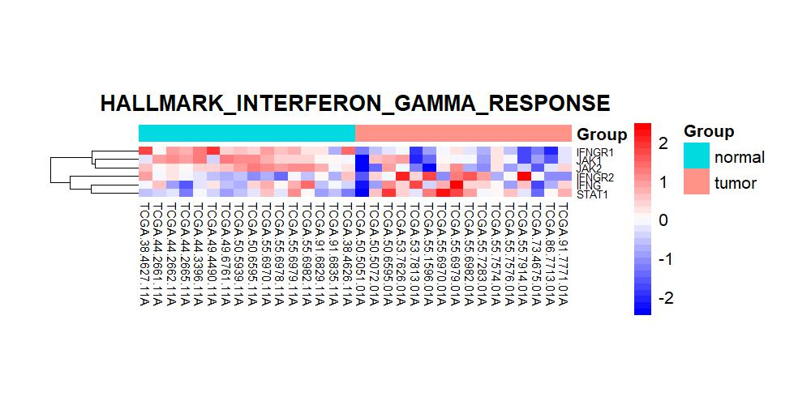
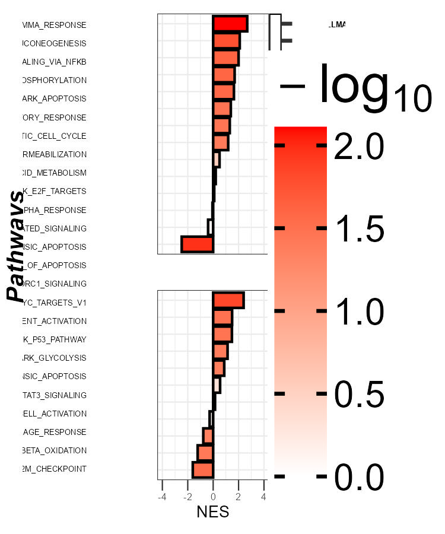
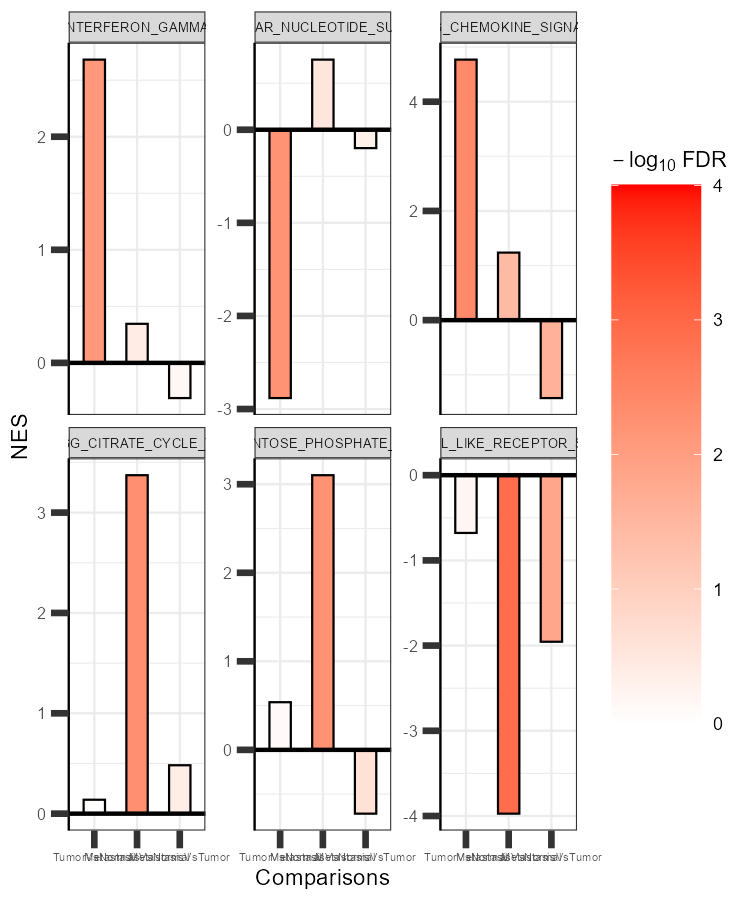

Pathway Analysis Workflow with OmicsKit
PA_workflow.RmdOverview
This vignette demonstrates a complete gene set enrichment analysis (GSEA) downstream workflow using OmicsKit, from loading gene sets through publication-quality visualization.
The workflow covers:
-
Loading gene sets : reading GMT files with
list_gmts() -
Merging results : combining multi-collection GSEA
TSV files with
merge_PA() -
Gene extraction : retrieving leading edge and
top-ranked genes with
getgenesPA()and annotating results withaddgenesPA() -
Heatmaps : visualizing gene expression per pathway
with
heatmap_PA()(file-path alternative:heatmap_path_PA()) -
Single-comparison plot :
splot_PA(): a publication-quality multi-panel barplot for one comparison -
Multi-comparison plot :
multiplot_PA(): faceted barplots comparing enrichment across conditions
Section 1 : Load gene sets
list_gmts()
Gene sets used for enrichment analysis are stored as
.gmt files, the standard format used by MSigDB.
list_gmts() reads all .gmt files from a
directory and returns a single named list, ready for downstream use.
geneset_list <- list_gmts("path/to/your/gmt_folder/")
# Number of gene sets loaded
length(geneset_list)
# Names of the first five gene sets
names(geneset_list)[1:5]
# Genes in one specific set
geneset_list[["HALLMARK_INTERFERON_GAMMA_RESPONSE"]]In this vignette, we use a built-in example
geneset_list, which contains 40 curated gene sets across
four biological themes (apoptosis, cell cycle, immune response, and
metabolism), and the built-in gsea_results dataset, which
mimics the output of merge_PA() for three comparisons
across HALLMARK, KEGG, and GO collections.
data(geneset_list)
data(gsea_results)
data(deseq2_results)
data(vst_counts)
data(sampledata)
# Ranked gene list: DESeq2 Wald stat from most positive to most negative
ranked_genes <- deseq2_results$gene_id[
order(deseq2_results$stat, decreasing = TRUE)
]
# Overview of the enrichment results
dim(gsea_results)
#> [1] 120 15
unique(gsea_results$COMPARISON)
#> [1] "TumorVsNormal" "MetastasisVsNormal" "MetastasisVsTumor"
unique(gsea_results$COLLECTION)
#> [1] "HALLMARK" "KEGG" "GO"Section 2 : Merge GSEA results
merge_PA()
In a real analysis, GSEA produces one results file per MSigDB
collection (e.g., H.tsv for HALLMARK, C2.tsv
for KEGG). merge_PA() reads all .tsv files
from a directory, standardizes column names, parses the leading edge
string into numeric components (tags, list,
signal), computes -log10(FDR), and returns a
single combined data frame.
gsea_data <- merge_PA(
input_directory = "path/to/gsea_results/",
fdr_replace = 0.001 # replace FDR = 0 (below permutation resolution)
)
# Inspect result
head(gsea_data[, c("NAME", "NES", "FDR", "COLLECTION", "COMPARISON", "tags")])Note: Each
.tsvfile must contain aComparisoncolumn identifying the comparison name (e.g.,"TumorVsNormal"). Thenmerge_PA()renames it toCOMPARISON. If your files come from a single run without that column, add it manually:your_data$Comparison <- "TumorVsNormal"
The built-in gsea_results already has this
structure:
# Key columns produced by merge_PA()
head(gsea_results[, c("NES", "FDR", "Log10FDR",
"COLLECTION", "COMPARISON", "tags", "SIZE")], n = 2)
#> NES FDR Log10FDR COLLECTION COMPARISON
#> HALLMARK_APOPTOSIS 1.69000339 0.02526288 1.5975172 HALLMARK TumorVsNormal
#> HALLMARK_P53_PATHWAY 0.08454987 0.82178574 0.0852414 HALLMARK TumorVsNormal
#> tags SIZE
#> HALLMARK_APOPTOSIS 0.60000000 15
#> HALLMARK_P53_PATHWAY 0.06963633 14Section 3 : Extract leading edge genes
addgenesPA()
After obtaining pathway results, getgenesPA() retrieves
the gene members relevant to each enrichment signal. Three extraction
modes are available: - "le" (GSEA only):
leading edge genes : the subset that drives the enrichment score. -
"top": top-ranked n % of genes by
rank metric : applicable to any enrichment method (GSEA, CAMERA, PADOG,
etc.). - "all": all members of the gene
set, ordered by rank. addgenesPA() then appends the gene
lists as comma-separated columns (le_genes,
top_genes, all_genes) to the pathway results
table.
# Filter to one comparison
pa_single <- gsea_results[gsea_results$COMPARISON == "TumorVsNormal", ]
# Optional: define the top fraction for mode "top"
pa_single$top <- 0.30 # top 30% of gene set members by rank
# Extract genes using all three modes
gene_lists <- getgenesPA(
pa_data = pa_single,
geneset_list = geneset_list,
ranked_genes = ranked_genes,
genes = c("all", "le", "top")
)
# Inspect results for one pathway
## leading edge
gene_lists$le[["HALLMARK_INTERFERON_GAMMA_RESPONSE"]]
## top 30% by rank
gene_lists$top[["HALLMARK_INTERFERON_GAMMA_RESPONSE"]]
## all members
gene_lists$all[["HALLMARK_INTERFERON_GAMMA_RESPONSE"]]
# Append gene columns to the pathway table
pa_annot <- addgenesPA(pa_single, gene_lists)
# Number of gene sets annotated
nrow(pa_annot)
head(pa_annot[, c("NAME", "all_genes", "le_genes", "top_genes")])Tip: For CAMERA or other enrichment methods that do not produce leading edge information, use
genes = c("all", "top")and setpa_data$topto your desired fraction (e.g.,0.25for the top 25 % by rank). Do not requestgenes = "le"without atagscolumn.
Section 4 : Heatmaps
heatmap_PA()
heatmap_PA() generates one heatmap per gene set based on
pa_data_annot. Genes are ordered within each heatmap by
their position in ranked_genes. Output files are organized
into subdirectories by format (PDF / JPG) and gene selection mode
(all_genes, le_genes,
top_genes).
heatmap_PA(
expression_data = vst_counts,
metadata = sampledata,
pa_data_annot = pa_annot,
ranked_genes = ranked_genes,
plot_genes = c("all_genes", "le_genes", "top_genes"),
sample_col = "patient_id",
group_col = "sample_type",
out_dir = "heatmaps_PA",
pdf = TRUE,
jpg = TRUE
)
# Creates, for example:
# heatmaps_PA/jpg/top_genes/HALLMARK_INTERFERON_GAMMA_RESPONSE_heatmap.jpg
# heatmaps_PA/pdf/le_genes/HALLMARK_INTERFERON_GAMMA_RESPONSE_heatmap.pdf
# ... (one file per gene set per format per mode)The heatmap below shows the top-ranked genes for
HALLMARK_INTERFERON_GAMMA_RESPONSE across tumor and normal
TCGA-LUAD samples:

Expression heatmap of top-ranked genes in HALLMARK_INTERFERON_GAMMA_RESPONSE across TCGA-LUAD tumor and normal samples. Genes are ordered by DESeq2 Wald statistic.
heatmap_path_PA() : file-path alternative
heatmap_path_PA() is a convenience wrapper that reads
all inputs from disk (expression TSV, metadata XLSX, GMT file,
ranked-genes TSV, GSEA TSV) and calls the same heatmap engine
internally. It is useful when running the analysis immediately after
GSEA without loading data into R.
heatmap_path_PA(
main_dir = "path/to/analysis/",
expression_file = "vst_expression.tsv",
metadata_file = "metadata.xlsx",
gmt_file = "h.all.v2023.symbols.gmt",
ranked_genes_file = "ranked_genes.tsv",
gsea_file = "H.tsv",
output_dir = "leading_edge_heatmaps",
sample_col = "patient_id",
group_col = "sample_type",
save_dataframe = TRUE # also saves intermediate gene table as .tsv
)
# Produces the same output as heatmap_PA() for a single GSEA fileWhich function to use? Prefer
heatmap_PA()when your data are already in R (e.g., after callingmerge_PA(),getgenesPA(), andaddgenesPA()). Useheatmap_path_PA()when you want a quick one-call solution that reads directly from files on disk. Both functions produce identical heatmaps.
Section 5 : General plot | Single-comparison
splot_PA() generates a publication-quality multi-panel
enrichment plot for one comparison. Gene sets appear on
the y-axis (grouped by MSigDB collection), NES on the x-axis, and
−log10(FDR) as fill color. Six panels are assembled side-by-side using
patchwork.
single <- gsea_results[gsea_results$COMPARISON == "TumorVsNormal", ]
splot_PA(
data = single,
geneset_col = "NAME",
collection_col = "COLLECTION",
nes_col = "NES",
fdr_col = "FDR",
order = "desc",
fill_limits = c(0, 2), # cap at -log10(FDR) = 5
fill_palette = c("white", "red")
)
Single-comparison pathway enrichment plot (TumorVsNormal). Gene sets are sorted by NES; fill color encodes -log10(FDR), capped at 2. Collections are annotated to the right.
Tip: Use
fill_limits = c(0, 2)to prevent a handful of extremely significant gene sets from washing out the color contrast for the rest. Any pathway with FDR ≤ 0.01 will be shown in the maximum color (red).
Section 6 : General plot | Multi-comparison
multiplot_PA() generates a faceted
barplot showing NES across multiple comparisons for a selected
set of gene sets. Each facet represents one gene set; bars represent the
NES per comparison, colored by −log10(FDR). This layout makes it
straightforward to assess how enrichment changes across conditions.
# Subset to pathways of interest across all comparisons
pathways_of_interest <- c(
"HALLMARK_INTERFERON_GAMMA_RESPONSE",
"HALLMARK_INFLAMMATORY_RESPONSE",
"HALLMARK_G2M_CHECKPOINT",
"HALLMARK_E2F_TARGETS",
"HALLMARK_GLYCOLYSIS",
"HALLMARK_OXIDATIVE_PHOSPHORYLATION"
)
multi_data <- gsea_results[gsea_results$NAME %in% pathways_of_interest, ]
multiplot_PA(
data = multi_data,
comparison_col = "COMPARISON",
facet_col = "NAME",
axis_y = "NES",
fdr_col = "FDR",
comparison_order = c("TumorVsNormal",
"MetastasisVsNormal",
"MetastasisVsTumor"),
custom_labels = c(
TumorVsNormal = "Tumor",
MetastasisVsNormal = "Meta",
MetastasisVsTumor = "Meta/Tumor"
),
ncol_wrap = 3,
free_y = TRUE,
fill_limits = c(0, 5),
fill_palette = c("white", "red")
)
Multi-comparison pathway enrichment plot. Each facet shows NES for one HALLMARK gene set across three pairwise comparisons. Fill color encodes -log10(FDR), capped at 5.
Tip: Use
comparison_orderto control the left-to-right arrangement of comparisons on the x-axis of each facet, andcustom_labelsto replace long comparison names with shorter axis labels.
Full workflow : summary
library(OmicsKit)
# 1. Load gene sets
gsl <- list_gmts("path/to/gmt_folder/")
# 2. Merge GSEA output TSV files
gsea_data <- merge_PA(
input_directory = "path/to/gsea_results/",
fdr_replace = 0.001
)
# 3. Build ranked gene list (from DESeq2 stat or log2FC)
ranked <- deseq2_results$gene_id[
order(deseq2_results$stat, decreasing = TRUE)
]
# 4. Extract leading edge and top-ranked genes
pa_single <- gsea_data[gsea_data$COMPARISON == "TumorVsNormal", ]
pa_single$top <- 0.30
gene_lists <- getgenesPA(pa_single, gsl, ranked, genes = c("all", "le", "top"))
pa_annot <- addgenesPA(pa_single, gene_lists)
# 5. Heatmaps
heatmap_PA(
expression_data = vst_counts,
metadata = sampledata,
pa_data_annot = pa_annot,
ranked_genes = ranked,
plot_genes = c("all_genes", "le_genes", "top_genes"),
sample_col = "patient_id",
group_col = "sample_type",
out_dir = "heatmaps_PA"
)
# Alternative: file-path version (reads directly from disk)
heatmap_path_PA(
main_dir = "path/to/analysis/",
expression_file = "vst_expression.tsv",
metadata_file = "metadata.xlsx",
gmt_file = "h.all.v2023.symbols.gmt",
ranked_genes_file = "ranked_genes.tsv",
gsea_file = "H.tsv",
output_dir = "leading_edge_heatmaps"
)
# 6. Single-comparison enrichment plot
splot_PA(
data = pa_single,
geneset_col = "NAME",
collection_col = "COLLECTION",
nes_col = "NES",
fdr_col = "FDR",
fill_limits = c(0, 5)
)
# 7. Multi-comparison enrichment plot
pathways_oi <- c(
"HALLMARK_INTERFERON_GAMMA_RESPONSE",
"HALLMARK_INFLAMMATORY_RESPONSE",
"HALLMARK_G2M_CHECKPOINT"
)
multiplot_PA(
data = gsea_data[gsea_data$NAME %in% pathways_oi, ],
comparison_col = "COMPARISON",
facet_col = "NAME",
fdr_col = "FDR",
comparison_order = c("TumorVsNormal", "MetastasisVsNormal", "MetastasisVsTumor"),
ncol_wrap = 3
)Session info
sessionInfo()
#> R version 4.4.2 (2024-10-31 ucrt)
#> Platform: x86_64-w64-mingw32/x64
#> Running under: Windows 11 x64 (build 26200)
#>
#> Matrix products: default
#>
#>
#> locale:
#> [1] LC_COLLATE=English_United States.utf8
#> [2] LC_CTYPE=English_United States.utf8
#> [3] LC_MONETARY=English_United States.utf8
#> [4] LC_NUMERIC=C
#> [5] LC_TIME=English_United States.utf8
#>
#> time zone: America/Bogota
#> tzcode source: internal
#>
#> attached base packages:
#> [1] stats graphics grDevices utils datasets methods base
#>
#> other attached packages:
#> [1] ggplot2_4.0.2 OmicsKit_1.0.0.0000
#>
#> loaded via a namespace (and not attached):
#> [1] gtable_0.3.6 jsonlite_2.0.0 dplyr_1.2.0 compiler_4.4.2
#> [5] tidyselect_1.2.1 jquerylib_0.1.4 systemfonts_1.3.2 scales_1.4.0
#> [9] textshaping_1.0.5 yaml_2.3.12 fastmap_1.2.0 R6_2.6.1
#> [13] patchwork_1.3.2 generics_0.1.4 knitr_1.51 htmlwidgets_1.6.4
#> [17] tibble_3.3.1 desc_1.4.3 bslib_0.10.0 pillar_1.11.1
#> [21] RColorBrewer_1.1-3 rlang_1.1.7 cachem_1.1.0 xfun_0.54
#> [25] fs_1.6.7 sass_0.4.10 S7_0.2.1 otel_0.2.0
#> [29] cli_3.6.5 withr_3.0.2 pkgdown_2.2.0 magrittr_2.0.4
#> [33] digest_0.6.39 grid_4.4.2 rstudioapi_0.18.0 lifecycle_1.0.5
#> [37] vctrs_0.7.1 evaluate_1.0.5 glue_1.8.0 farver_2.1.2
#> [41] ragg_1.5.1 rmarkdown_2.30 jpeg_0.1-11 tools_4.4.2
#> [45] pkgconfig_2.0.3 htmltools_0.5.9